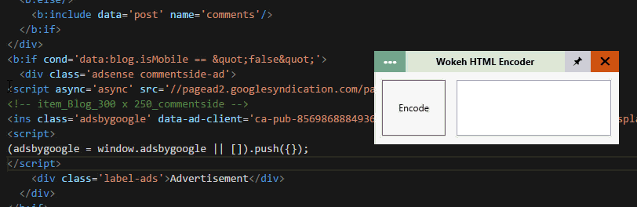

Jika kamu adalah blogger yang suka posting kode / menampilkan kode di postingan blog tentang tutorial membuat website atau untuk memasang kode ke template blogger misal kode adsense, kalian bisa menggunakan html parser pada umumnya secara online.

Akan tetapi jika kamu ingin yang mode offline bisa coba yang satu ini. Tak hanya memparse kode html, tapi juga bisa mengembalikan kode html yang sudah diparse kembali ke kode html asli dan juga tambahan untuk mengkonversi gambar ke Base64.
Cara menggunakan:
Parse HTML (encode / decode)
- Salin markup kode yang akan di parse
- Klik pilihan menu
- Pilih html encode / html decode
- Klik Tombol Encode / Decode
- Pastekan hasil kode
Image to base64
- Klik / pilih image to base64 pada menu pilihan
- Klik tombol Open File
- Pilih gambar yang akan diubah / encode ke base64
- Pastekan hasilnya encode
Download
- Unduh dengan installer ( Recomended )
- Unduh tanpa installer
- Unduh Source Code